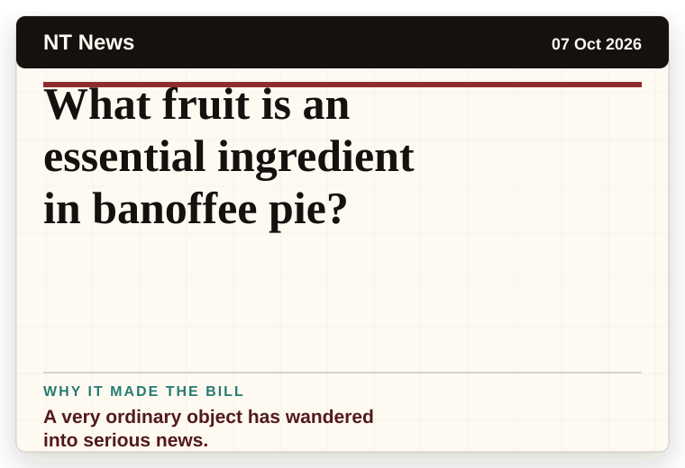
NT News
Australia
What fruit is an essential ingredient in banoffee pie?
A very ordinary object has wandered into serious news.
The latest daily picks, linked back to the original sources. Search the room, pick a source, or follow a headline out to the full story.
Record updated: 08 Oct 2026, 07:42 AM AEST
Showing 20 headline candidates from the refresh run completed on 08 Oct 2026, 07:42 AM AEST.

A very ordinary object has wandered into serious news.
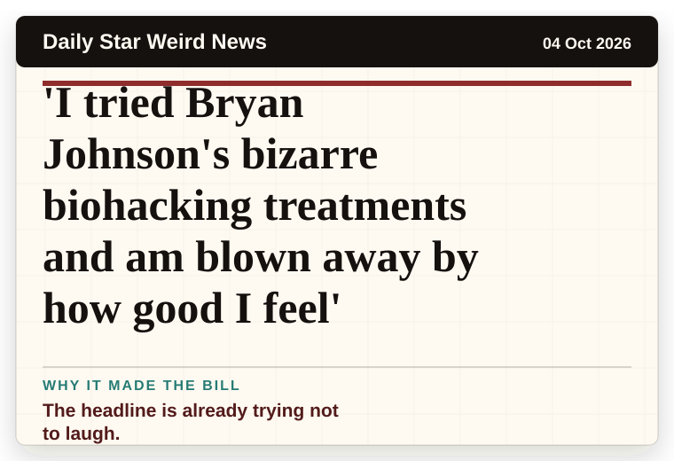
The headline is already trying not to laugh.
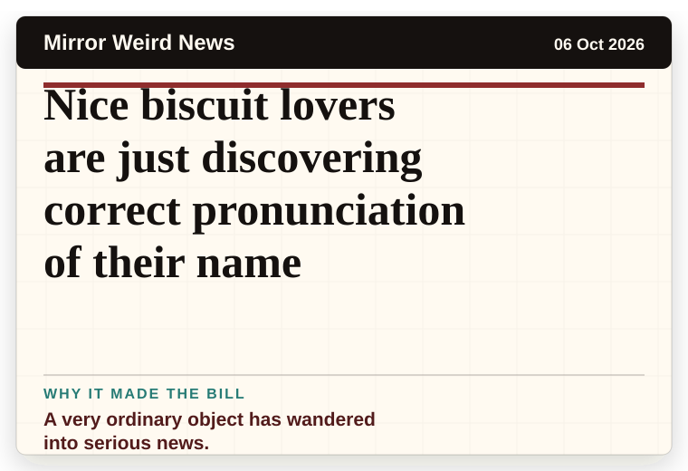
A very ordinary object has wandered into serious news.
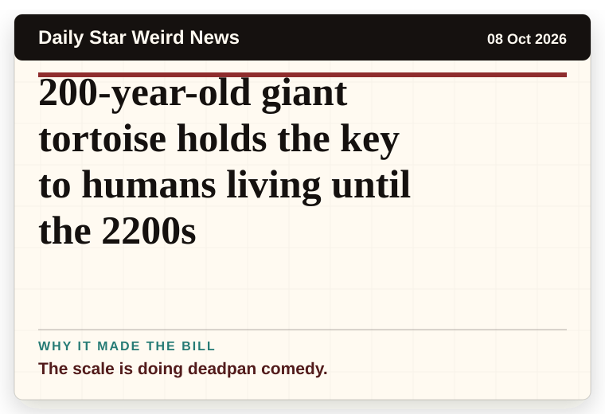
The scale is doing deadpan comedy.
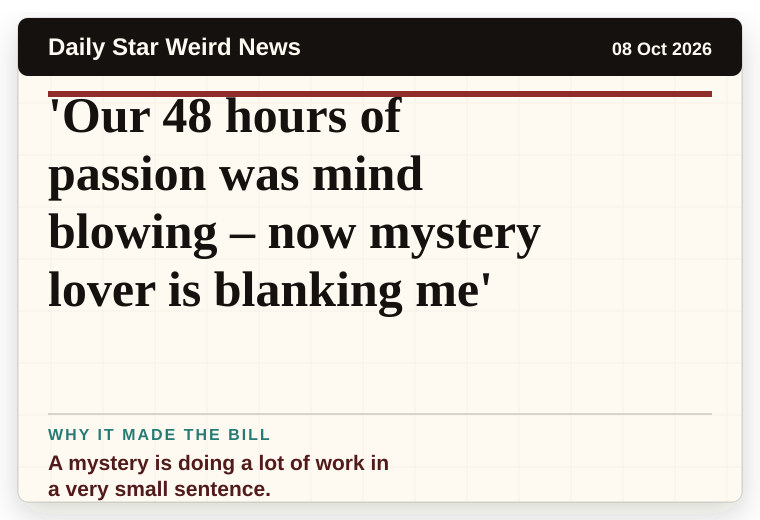
A mystery is doing a lot of work in a very small sentence.
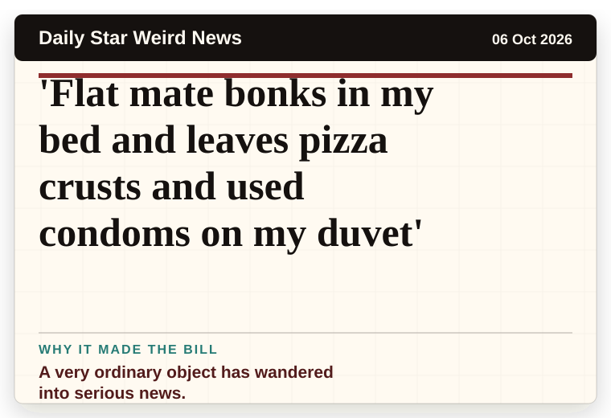
A very ordinary object has wandered into serious news.
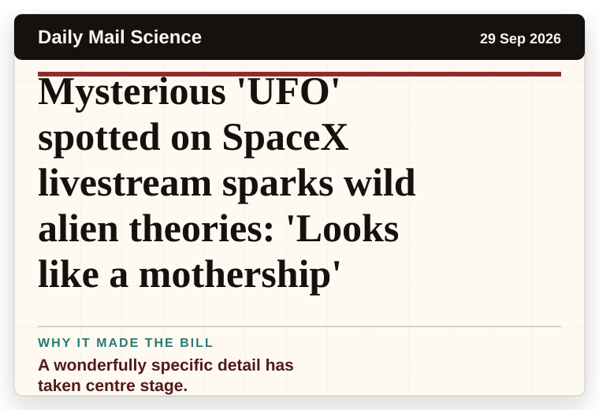
A wonderfully specific detail has taken centre stage.
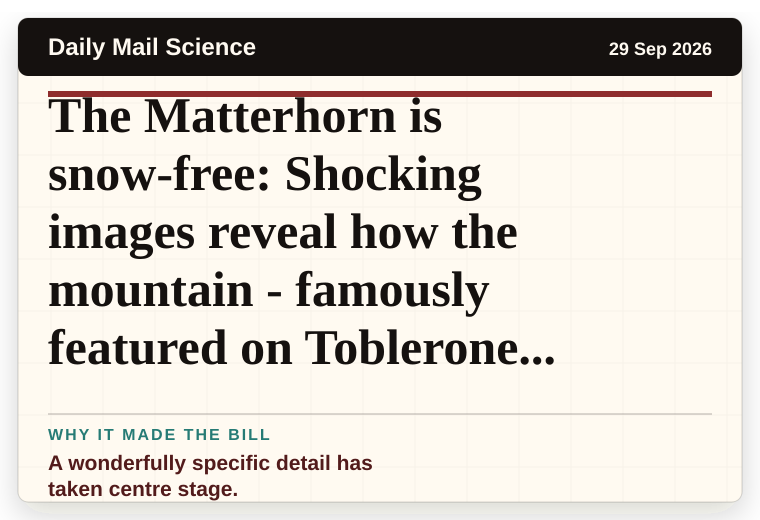
A wonderfully specific detail has taken centre stage.
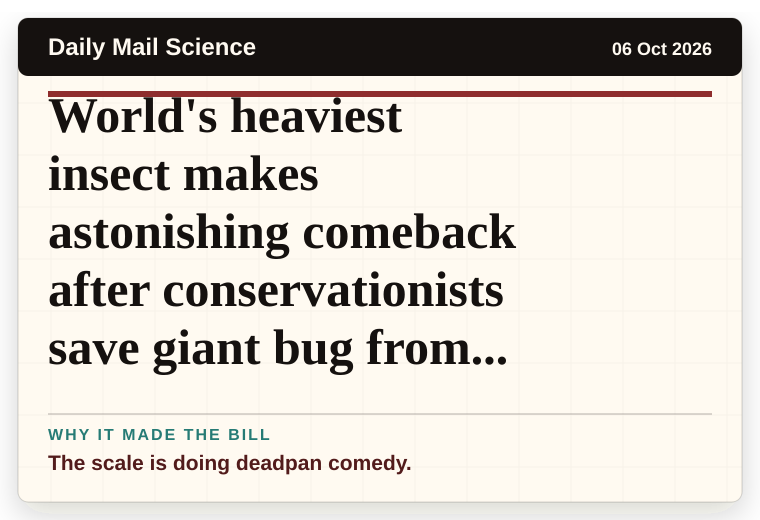
The scale is doing deadpan comedy.
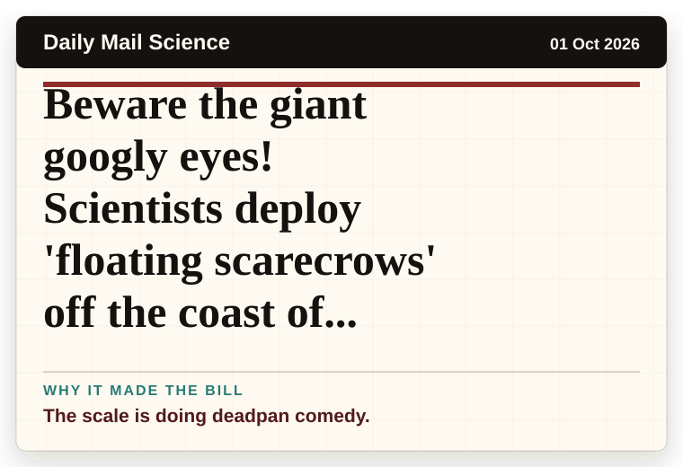
The scale is doing deadpan comedy.
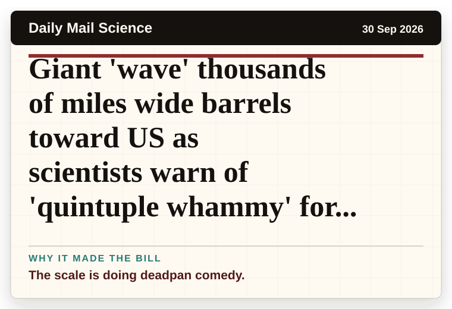
The scale is doing deadpan comedy.
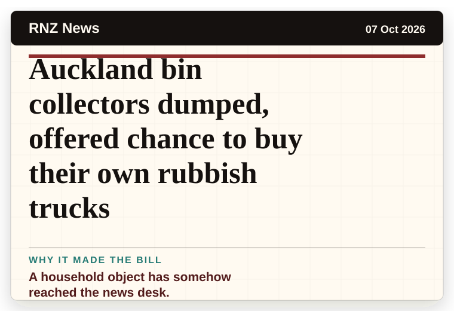
A household object has somehow reached the news desk.
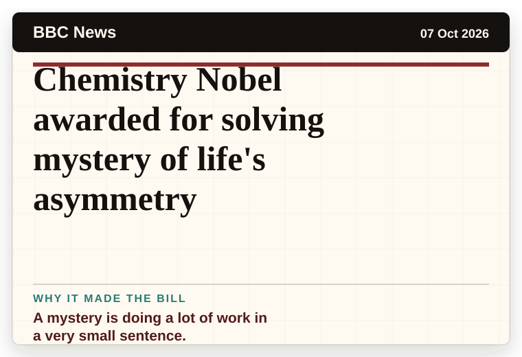
A mystery is doing a lot of work in a very small sentence.
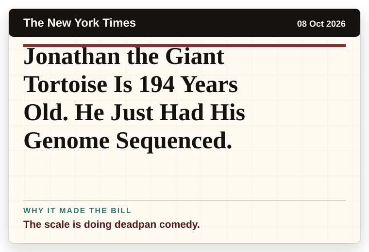
The scale is doing deadpan comedy.
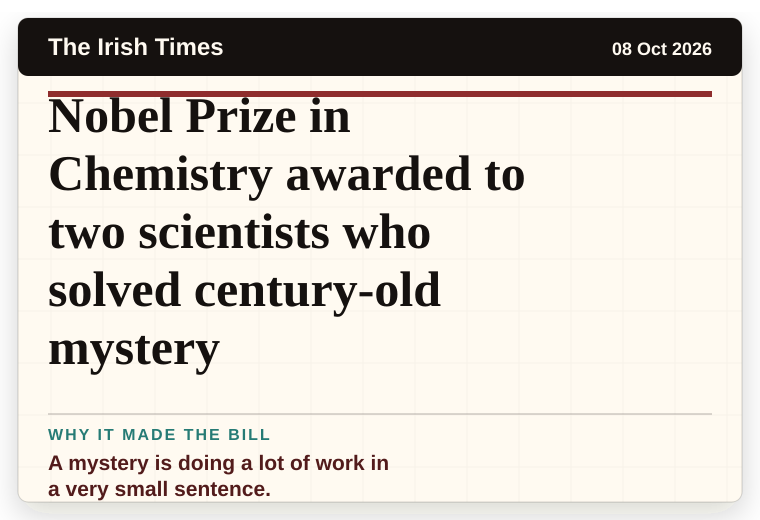
A mystery is doing a lot of work in a very small sentence.
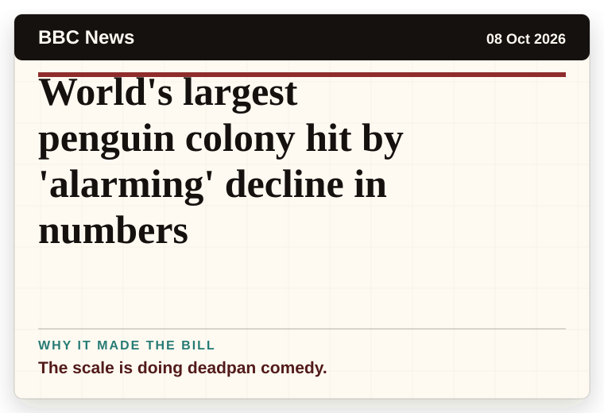
The scale is doing deadpan comedy.
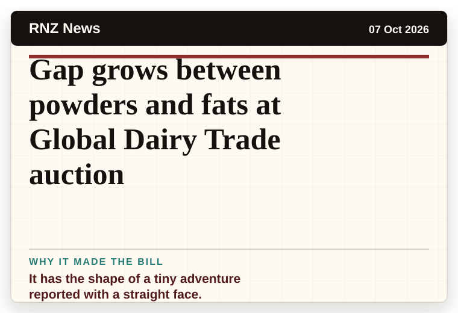
It has the shape of a tiny adventure reported with a straight face.
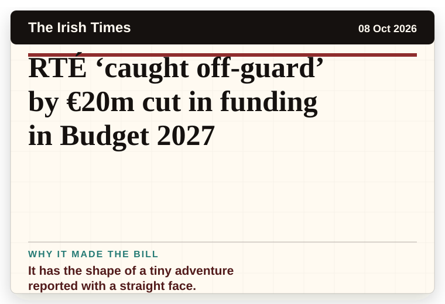
It has the shape of a tiny adventure reported with a straight face.
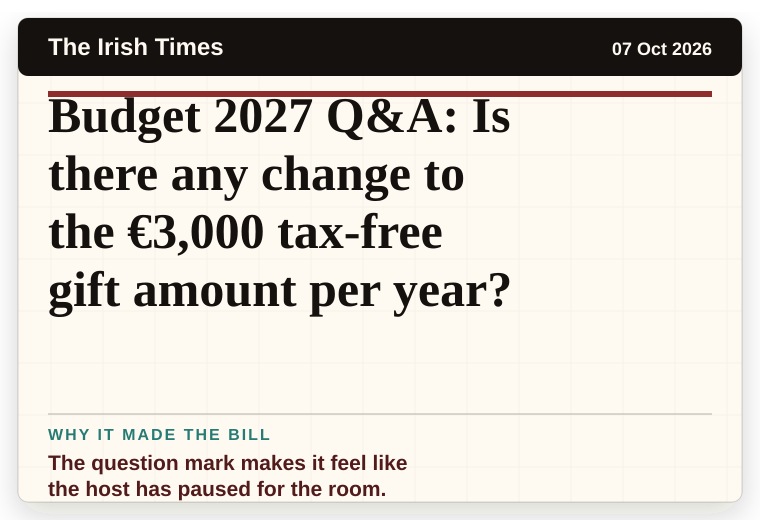
The question mark makes it feel like the host has paused for the room.
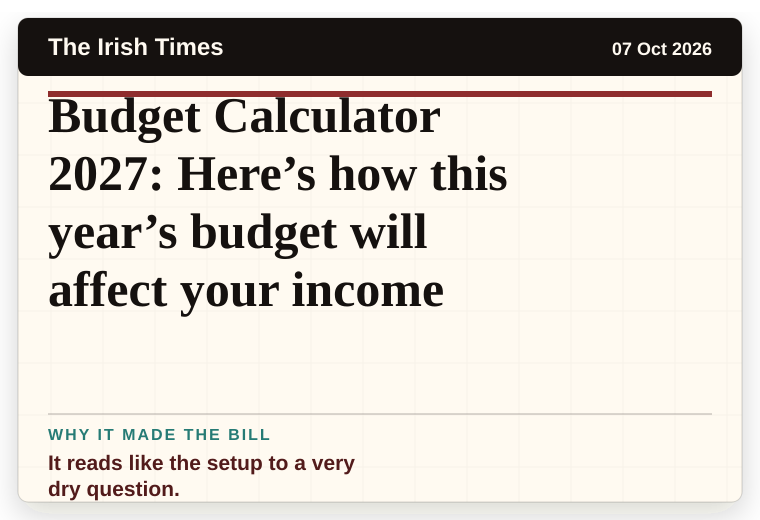
It reads like the setup to a very dry question.